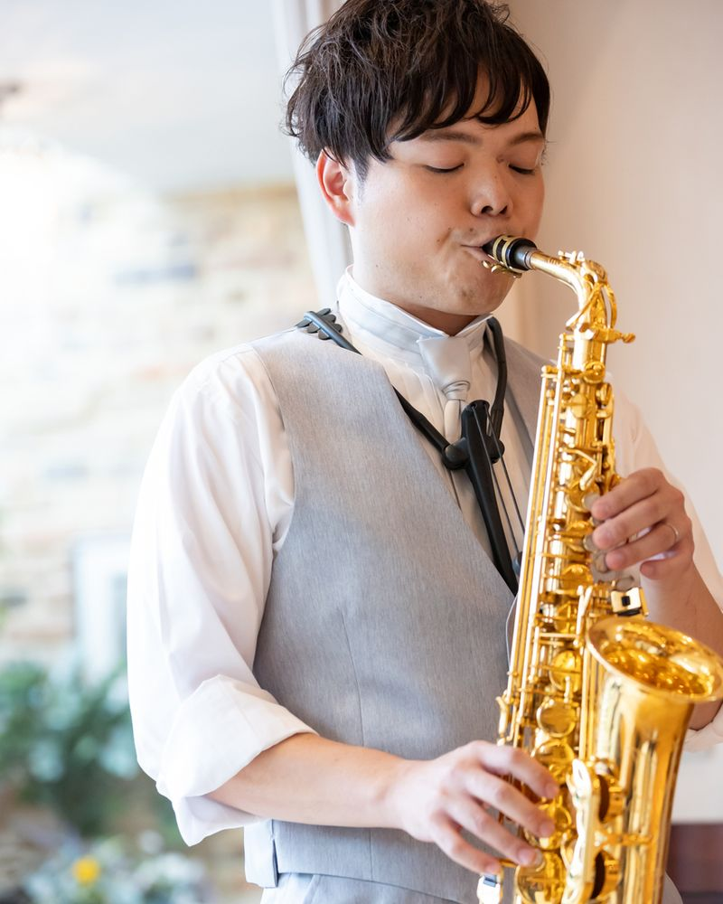
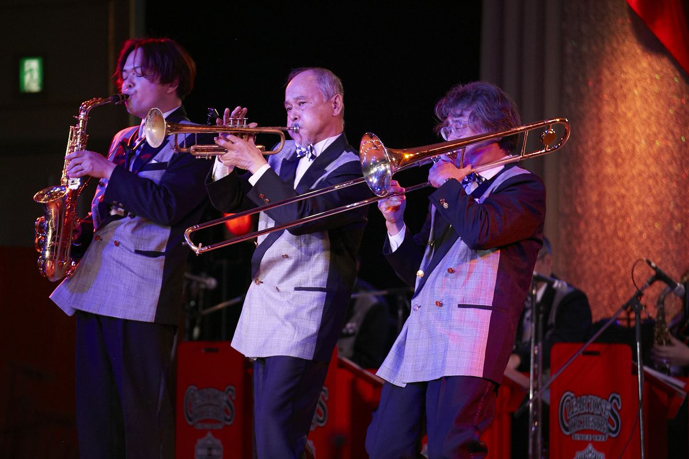
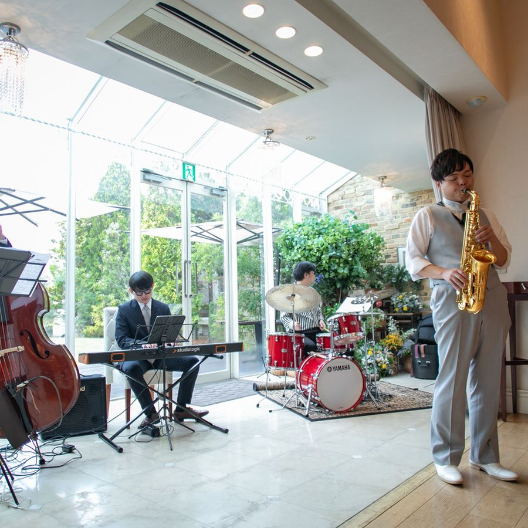
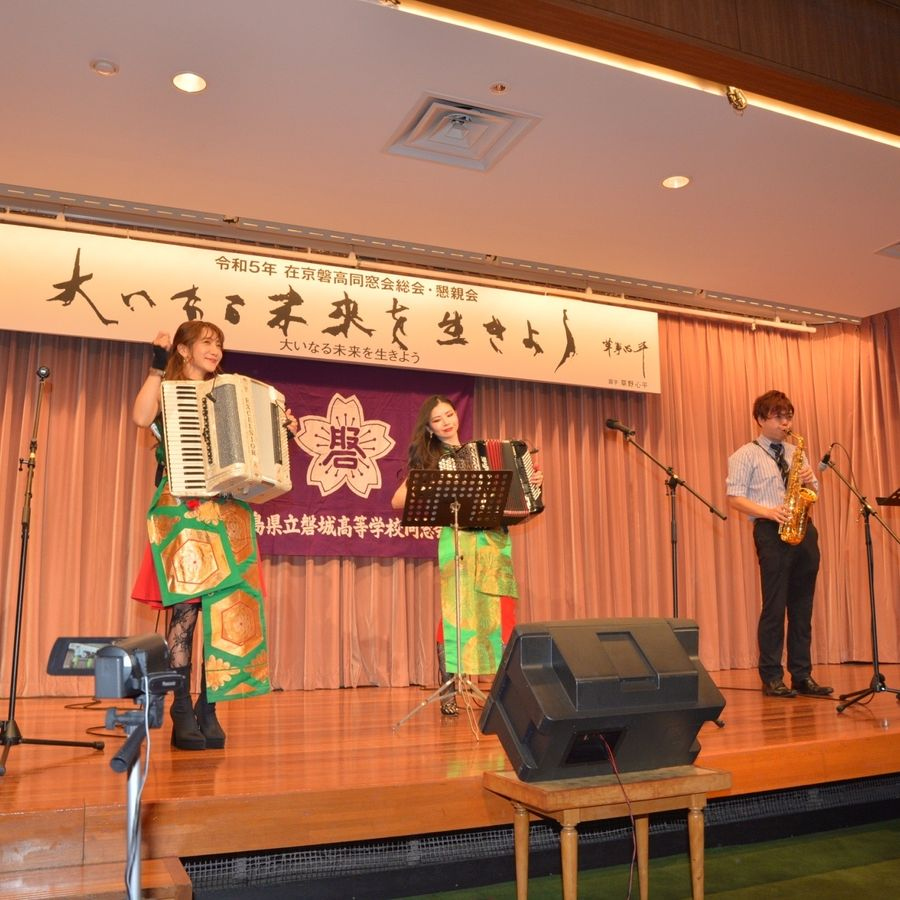
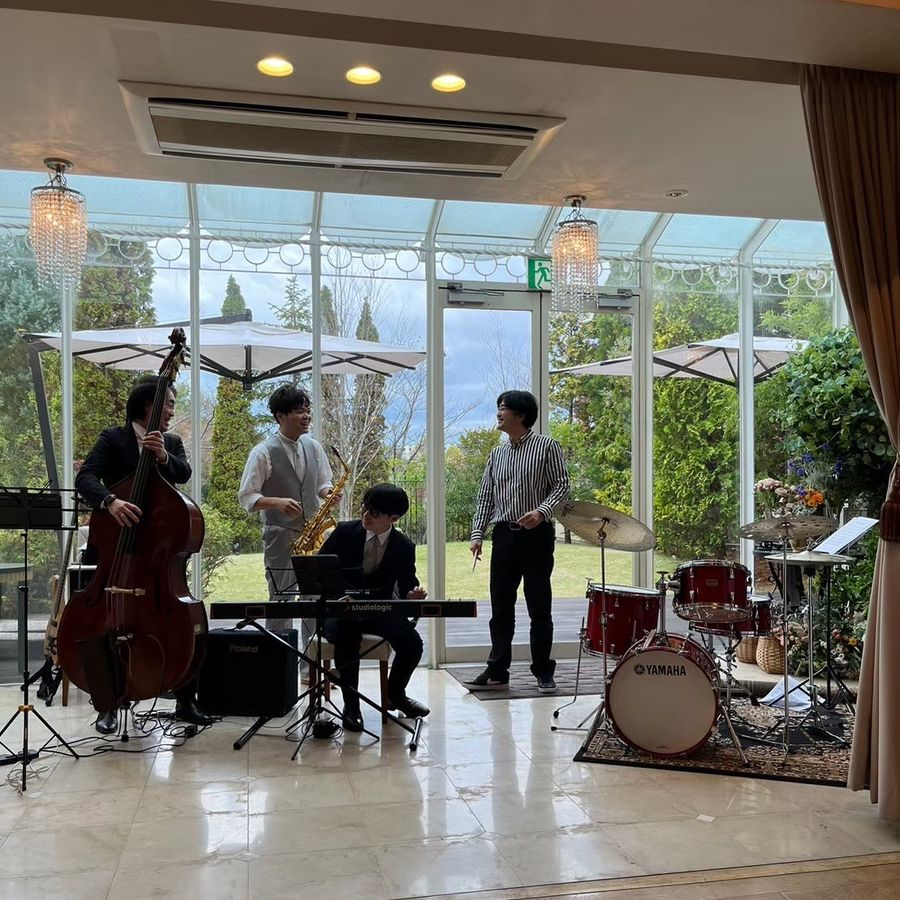

PERFORMANCE REQUEST
サックス1本で、会場の空気が変わります。式典のオープニングから会食のBGM、学校の鑑賞会まで、ご予算と会場に合わせて内容を組み立てます。お見積りは無料です。

時間はあくまで目安です。ステージ数や曲数はご相談ください。
周年記念パーティー、忘年会・新年会、社内表彰式、展示会や式典のオープニング。海外からのお客様向けに、ジャズやミュージカルの曲を中心にした構成もできます。
芸術鑑賞会、音楽の授業でのミニコンサート、吹奏楽部との共演やゲスト出演。楽器の紹介や、生徒さんが参加できるコーナーも入れられます。吹奏楽部の指導経験が長いので、部活動へのアドバイスもあわせてどうぞ。
入場曲、お色直しの余興、手紙の朗読のBGM、誕生日やプロポーズのサプライズ演出、会食中のBGM。
ディナータイムの生演奏、季節のイベント、高齢者施設や福祉施設でのコンサート。懐かしい歌謡曲や童謡も演奏します。
金額はすべて税別です。内容が決まっていなくても、お見積りは無料でお出しします。
サックスソロ
50,000円〜
1ステージ。伴奏音源を使った演奏です。音響機材は会場に合わせて持ち込むので、ご用意いただくのは電源だけです。
伴奏者つき（ピアノなど）
＋50,000円〜 / 1人
ソロの料金に、演奏者1人ごとに追加。キーボードやアンプなどの機材費が別にかかります。
例：サックス＋ピアノ
100,000円〜（＋機材費）
交通費
ご相談
我孫子からの実費が基本です。運ぶ機材の量によって変わるので、お見積りでお知らせします。




大丈夫です。小さな会場向けの小型スピーカーから、大きな会場向けのPA（ミキサー）付き大型スピーカーまで、会場の広さに合わせて持ち込みます。ご用意いただくのは電源だけです。大型の音響が必要な場合は、機材費をお見積りに含めてお知らせします。
1か月前までにご相談いただけると確実です。急ぎの場合も、まずはお問い合わせください。
できます。ご希望の曲を伺って、編曲してお持ちします。
はい。インボイス制度の登録事業者なので、適格請求書を発行します。会社や学校あてのお見積書・請求書もお出しします。
関東・東北を中心に、全国どこへでも伺います。千葉県我孫子市が拠点です。遠方の場合は交通費・宿泊費を含めてお見積りします。